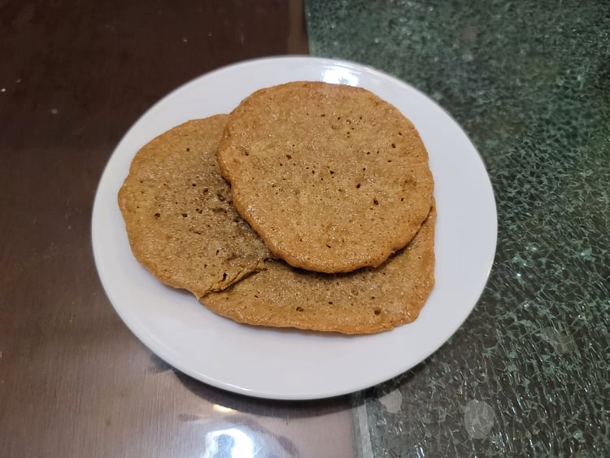

Sunflower Cookies

Ingredients:
- 1 cup Sunny Butter
- 1/4 cup Maple syrup or Honey, or to taste
- 1/4 cup Cornmeal
Instructions:
- Preheat an oven to 350 degrees Fahrenheit.
- Stir together the sunny butter and maple syrup/honey.
- Use a tablespoon to scoop balls of the dough and roll it in the cornmeal.
- Place the balls on a baking sheet lined with parchment paper and press down on them slightly.
- Bake for 8 - 10 minutes or until firm.